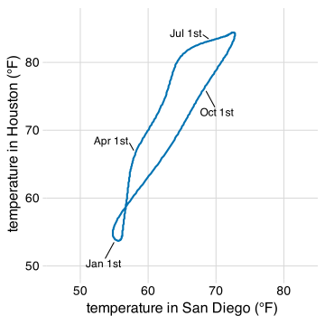
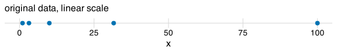
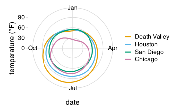

Coordinate systems and axes
2025-05-31
Changing units does not change the plot


If scale units are unrelated, aspect ratio is arbitrary

Logarithmic scales (log scales)
Visualize these five values: 1, 3.16, 10, 31.6, 100



Example: Population number of Texas counties
A linear scale emphasizes large counties

Example: Population number of Texas counties
A log scale shows symmetry around the median

Nonlinear coordinate systems: Polar coordinates


Cartesian vs polar example


Scale functions customize the x and y axes
Recall the box-office example from a prior lecture:

Scale functions customize the x and y axes
Add scale functions (no change in figure so far):

Scale functions customize the x and y axes
The parameter name sets the axis title:

Note: We could do the same with xlab() and ylab()
Scale functions customize the x and y axes
The parameter limits sets the scale limits:

Note: We could do the same with xlim() and ylim() but I advise against it, as these functions can have unexpected side-effects
Scale functions define transformations

Parameters work the same for all scale functions
Linear y scale:

Coords define the coordinate system

Coords define the coordinate system

Coords define the coordinate system

Use coord_fixed() for fixed aspect ratio

(Even better, similar axis ticks along both axes)